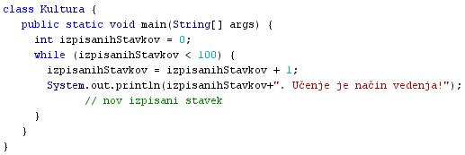

SPREMENLJIVKE
- Spremenljivka je oznaka, ki je povezana z neko vrednostjo.
- Primer: oseba = "Irena". Oznaka ali spremenljivka "oseba" ima vrednost "Irena".
- Vrednost, ki jo spremenljivka oznaèuje, je shranjena v pomnilniku raèunalnika.
- Spremenljivka je lahko povezana tudi z nekim izrazom ali enaèbo, ki ji je mogoèe prirediti vrednost.
- Primer: vsota = prviSumand + drugiSumand. Oznaka ali spremenljivka "vsota" ima vrednost, ki jo lahko izraèunamo kot seštevek dveh sumandov ali seštevancev.
- Spremenljivka je lahko zapisana kot èrka, beseda ali sestavljena beseda.
- Primeri: a, b, c, vsota, koncnaVrednost.
- Spremenljivka je oznaèevalec neke vrednosti, ki je shranjena v pomnilniku raèunalnika.
- Imena spremenljivk so v raèunalništvu veèinoma sestavljena iz veè znakov.
- Primeri: hitrost, visina.
- Imena spremenljivk, ki so sestavljena iz enega znaka, najpogosteje oznaèujejo pomožne spremenljivke, kot so števci v zankah in indeksi v tabelah (poljih).
- Primeri: i, j, k
- V izvorni kodi programov predstavlja spremenljivka oziroma ime spremenljivke povezavo z mestom ali lokacijo, na katerem se nahaja njena vrednost.
- Pri programiranju pogosto naletimo na dve vrsti spremenljivk: globalne spremenljivke in lokalne spremenljivke.
- Globalne spremenljivke so veljavne prav povsod v programu.
- Lokalne spremenljivke so veljavne samo v nekaterih delih programa, niso pa veljavne v vsem programu.
- Lokalne spremenljivke so spremenljivke, ki nastopajo v podprogramih.
- Podprogrami so krajši programèki, ki jih poklièeno v glavni program zato, da opravijo kakšno manjšo nalogo ali rešijo kakšen delni problem.
- Podprograme imenujemo še funkcije ali subrutine, v Javi pa tudi metode.
- Primer:
- Besedni opis problema in rešitve.
- "Zapiši stavek "Uèenje je naèin vedenja." in sicer stokrat. Stavke zapiši enega pod drugim. Vprašamo se, kaj vse bomo morali postoriti za rešitev problema in to opišemo v nekaj stavkih. Potek reševanja problema poskusimo premisliti èim bolj natanèno.
- Ker gre za ponavljanje, bomo izbrali zanko.
- Zaèetna vrednost števca zanke je 0.
- Èe bo števec manjši od 100, poveèaj števec za 1 ter izpiši enkrat želeni stavek. Poskrbi tudi, da se bo naslednji stavek zapisal v novo vstico.
- Èe števec ni manjši od 100, prekini zanko.
VAJA 44:
- V okolju za pisanje izvorne kode v jeziku Java, za prevajanje in za interaktivno delo zapiši zgornji program "Kultura". Pomagaj si s sliko.
- Kodo lahko tudi kopiraš iz te datoteke in jo prilepiš v okolje, v katerem pišeš programèke. Pozor: koda, ki jo boš kopiral/a, vsebuje eno, dve, tri ali štiri napake. Èe želiš, da bo program deloval, moraš napake odkriti in jih odpraviti.
- Izvorno kodo shrani pod imenom "ImePriimek44.java". ImePriimek je seveda tvoje lastno ime in priimek.
- Datoteko "ImePriimek44.java" prevedi.
- Prevedeno datoteko zaženi, preveri rezultat v interaktivnem oknu in poklièi profesorja, da vidi rezultat.
- Sam/a skonstruiraj diagram poteka v tej uèni enoti in ga nariši v zvezek. Pomagaj si z uèno enoto 40.
1. Vprašanja:
1. Kaj je spremenljivka?
2. Kje je vrednost spremenljivke shranjena?
3. Kako je spremenljivka lahko zapisana
4. Kdaj obièajno uporabimo za ime spremenljivke en sam znak, ki je najpogosteje èrka?
5. Na kateri dve osnovni skupini lahko pri programiranju razdelimo spremenljivke?
6. Kaj so globalne spremenljivke?
7. Kaj so lokalne spremenljivke?
8. Kaj so podprogrami?
9. Katere spremenljivke nastopajo v podprogramih?
10. Zapiši spremenljivke, ki jih lahko zaslediš v programu te uène enote.
2. Zapiši od ene do pet kljuènih besed, ki povzemajo vsebino te uène enote.
3. Povezave do dodatnih informacij.
Spremenljivke v angleški razlièici Wikipedie.
Spletni priroènik proizvajalca programskega okolja Java. To je podjetje Sun.
|